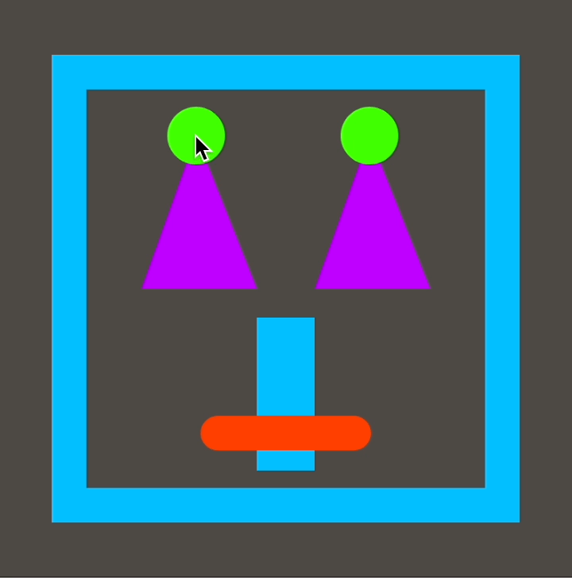

TBD.
In this lesson, you'll learn to draw rectangles, triangles, and lines, and you'll also learn how to change those shapes with your mouse or trackpad. You can make some pretty funny faces. 😊

Tinker
Click ▶Play. You'll see two rectangles.
They're created by the rect command.
Try these challenges:
Find the first rect command.
Change each number in it one number at a time, and click ▶Play after each change.
What does each number do?
Make the green rectangle appear higher than the pink rectangle
by changing the numbers inside the two rect commands.
Don't change the size of the rectangles, only their positions on screen.
Change the green rect command again
so that this rectangle is smaller and appears inside the pink rectangle.
Change the color of the green rectangle.
Tinker
Click ▶Play. You'll see two purple lines.
They're created by the line command.
Try these challenges:
Find the line rect command.
Change each number in it one number at a time, and click ▶Play after each change.
What does each number do?
Change the numbers inside the two line commands
so that the lines on screen form the letter L.
Change the numbers inside the two line commands
so that the lines on screen form the letter T.
Change the color of exactly one line. You can use any color you wish.
Tinker
Click ▶Play. You'll see a triangle.
It's created by the triangle command.
Try these challenges:
Change the triangle command so that its left tip
is at the bottom left corner of the canvas.
Change the triangle command so that its right tip
is at the bottom right corner of the canvas.
Change the triangle command so that the top tip
touches the top of the canvas.
Tinker
Click ▶Play. Then use your mouse or trackpad to move the cursor around the canvas.
You should see a white rectangle that follows the mouse.
Can you figure out which part of the code tells the rectangle to follow the cursor?
Try these challenges:
Delete mouseX and type a number from 0-250 instead.
Click Play. What happens? Why?
Click Revert to restore the previous script.
Switch mouseX and mouseY so that mouseY is
first and mouseX is second. Click ▶Play.
What do you see? Why?
Explanation
Remember that in the rect command, the first argument tells the rectangle its distance from the left edge,
also called its x-coordinate. The second argument tells the rectangle its distance from the top edge, also called its
y-coordinate.
The cursor also has its own x- and y-coordinates, called mouseX and mouseY.
So if you tell the rect command to go to mouseX, mouseY, the rectangle will go wherever the cursor is!
If you switch mouseX and mouseY something a bit different happens.
When you move the cursor up or down, the rectangle changes its x-coordinate and moves sideways!
Likewise, when you move the cursor sideways, the rectangle changes y-coordinate and moves up or down.
Tinker
mouseX is called a variable.
A variable is a label that stands in for a changing value.
For example, the label mouseX stands in for the mouse's distance from the left edge
of the canvas, which changes every time you move the cursor with your mouse or trackpad.
When the computer sees the label mouseX, it calculates the mouse's distance from
the left edge and plugs in that number to use instead of the label.
Try these challenges:
In the window below, use your mouse or trackpad to move the cursor sideways from left to right. What happens to mouseX?
Now move the cursor sideways from right to left. What happens to mouseX?
Now move the cursor straight up and down. What happens to mouseX now?
Tinker
mouseY is also a variable.
Its value is the mouse's distance from the top edge of the canvas.
In the window below, use your mouse or trackpad to move the cursor from top to bottom. What happens to mouseY?
Now move the cursor from bottom to top. What happens to mouseY?
Now move the cursor straight sideways. What happens to mouseY?
Tinker
Click ▶Play. You'll see one rectangle
following the cursor. The code almost
the same as in example 4, but there's one difference. Can you find it?
Try these challenges:
Delete the background command.
What happens? Why?
Then click Undo
to restore the background command. Then click ▶Play.
What happens? Why?
Explanation
Remember that function draw() happens over and over, endlessly.
So when the background command is inside function draw(), the code works like this:
The background color is painted on the screen.
A rectangle is drawn wherever the cursor is.
The background color is painted on the screen again, completely covering the previous rectangle.
A new rectangle is drawn wherever the cursor has moved to.
And so on! The result is that you see just one rectangle at a time
wherever the cursor has moved.
On the other hand, when the background command is in function setup(),
the background is painted just once when the project begins.
Then the rectangles are painted over and over by function draw() —
and they all can be seen on screen.
Tinker
mouseY is also a variable.
Its value is the mouse's distance from the top edge of the canvas.
In the window below, use your mouse or trackpad to move the cursor from top to bottom. What happens to mouseY?